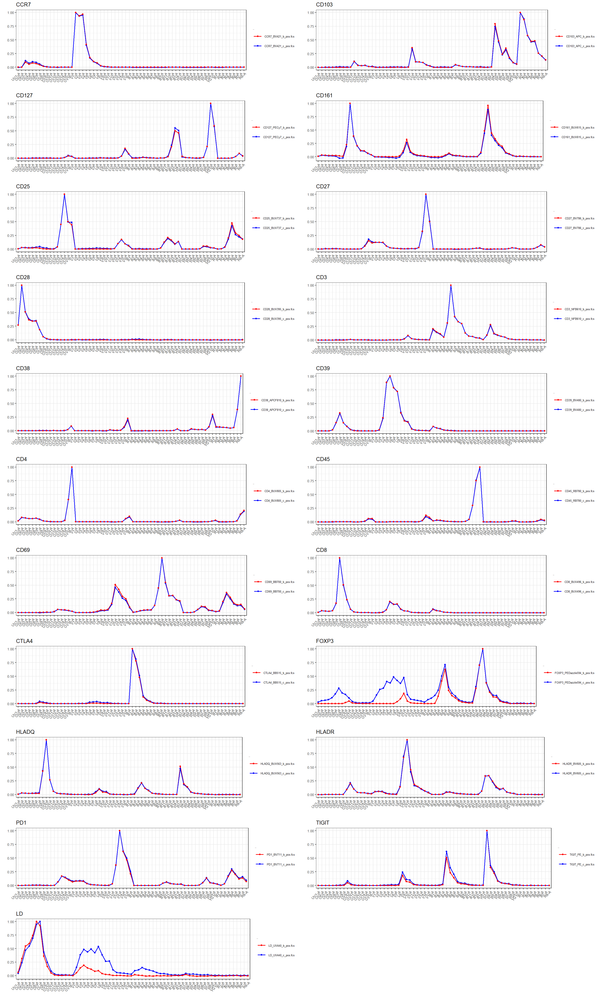

knitr::opts_chunk$set(echo = TRUE)Spectral profile comparison
load data
files <- dir("./bead_vs_cell/", pattern = "fcs$", full.names=T)
as.matrix(files) [,1]
[1,] "./bead_vs_cell/CCR7_BV421_b_neg.fcs"
[2,] "./bead_vs_cell/CCR7_BV421_b_pos.fcs"
[3,] "./bead_vs_cell/CCR7_BV421_c_neg.fcs"
[4,] "./bead_vs_cell/CCR7_BV421_c_pos.fcs"
[5,] "./bead_vs_cell/CD103_APC_b_neg.fcs"
[6,] "./bead_vs_cell/CD103_APC_b_pos.fcs"
[7,] "./bead_vs_cell/CD103_APC_c_neg.fcs"
[8,] "./bead_vs_cell/CD103_APC_c_pos.fcs"
[9,] "./bead_vs_cell/CD127_PECy7_b_neg.fcs"
[10,] "./bead_vs_cell/CD127_PECy7_b_pos.fcs"
[11,] "./bead_vs_cell/CD127_PECy7_c_neg.fcs"
[12,] "./bead_vs_cell/CD127_PECy7_c_pos.fcs"
[13,] "./bead_vs_cell/CD161_BUV615_b_neg.fcs"
[14,] "./bead_vs_cell/CD161_BUV615_b_pos.fcs"
[15,] "./bead_vs_cell/CD161_BUV615_c_neg.fcs"
[16,] "./bead_vs_cell/CD161_BUV615_c_pos.fcs"
[17,] "./bead_vs_cell/CD25_BUV737_b_neg.fcs"
[18,] "./bead_vs_cell/CD25_BUV737_b_pos.fcs"
[19,] "./bead_vs_cell/CD25_BUV737_c_neg.fcs"
[20,] "./bead_vs_cell/CD25_BUV737_c_pos.fcs"
[21,] "./bead_vs_cell/CD27_BV786_b_neg.fcs"
[22,] "./bead_vs_cell/CD27_BV786_b_pos.fcs"
[23,] "./bead_vs_cell/CD27_BV786_c_neg.fcs"
[24,] "./bead_vs_cell/CD27_BV786_c_pos.fcs"
[25,] "./bead_vs_cell/CD28_BUV395_b_neg.fcs"
[26,] "./bead_vs_cell/CD28_BUV395_b_pos.fcs"
[27,] "./bead_vs_cell/CD28_BUV395_c_neg.fcs"
[28,] "./bead_vs_cell/CD28_BUV395_c_pos.fcs"
[29,] "./bead_vs_cell/CD3_NFB610_b_neg.fcs"
[30,] "./bead_vs_cell/CD3_NFB610_b_pos.fcs"
[31,] "./bead_vs_cell/CD3_NFB610_c_neg.fcs"
[32,] "./bead_vs_cell/CD3_NFB610_c_pos.fcs"
[33,] "./bead_vs_cell/CD38_APCF810_b_neg.fcs"
[34,] "./bead_vs_cell/CD38_APCF810_b_pos.fcs"
[35,] "./bead_vs_cell/CD38_APCF810_c_neg.fcs"
[36,] "./bead_vs_cell/CD38_APCF810_c_pos.fcs"
[37,] "./bead_vs_cell/CD39_BV480_b_neg.fcs"
[38,] "./bead_vs_cell/CD39_BV480_b_pos.fcs"
[39,] "./bead_vs_cell/CD39_BV480_c_neg.fcs"
[40,] "./bead_vs_cell/CD39_BV480_c_pos.fcs"
[41,] "./bead_vs_cell/CD4_BUV805_b_neg.fcs"
[42,] "./bead_vs_cell/CD4_BUV805_b_pos.fcs"
[43,] "./bead_vs_cell/CD4_BUV805_c_neg.fcs"
[44,] "./bead_vs_cell/CD4_BUV805_c_pos.fcs"
[45,] "./bead_vs_cell/CD45_RB780_b_neg.fcs"
[46,] "./bead_vs_cell/CD45_RB780_b_pos.fcs"
[47,] "./bead_vs_cell/CD45_RB780_c_neg.fcs"
[48,] "./bead_vs_cell/CD45_RB780_c_pos.fcs"
[49,] "./bead_vs_cell/CD69_BB700_b_neg.fcs"
[50,] "./bead_vs_cell/CD69_BB700_b_pos.fcs"
[51,] "./bead_vs_cell/CD69_BB700_c_neg.fcs"
[52,] "./bead_vs_cell/CD69_BB700_c_pos.fcs"
[53,] "./bead_vs_cell/CD8_BUV496_b_neg.fcs"
[54,] "./bead_vs_cell/CD8_BUV496_b_pos.fcs"
[55,] "./bead_vs_cell/CD8_BUV496_c_neg.fcs"
[56,] "./bead_vs_cell/CD8_BUV496_c_pos.fcs"
[57,] "./bead_vs_cell/CTLA4_BB515_b_neg.fcs"
[58,] "./bead_vs_cell/CTLA4_BB515_b_pos.fcs"
[59,] "./bead_vs_cell/CTLA4_BB515_c_neg.fcs"
[60,] "./bead_vs_cell/CTLA4_BB515_c_pos.fcs"
[61,] "./bead_vs_cell/FOXP3_PEDazzle594_b_neg.fcs"
[62,] "./bead_vs_cell/FOXP3_PEDazzle594_b_pos.fcs"
[63,] "./bead_vs_cell/FOXP3_PEDazzle594_c_neg.fcs"
[64,] "./bead_vs_cell/FOXP3_PEDazzle594_c_pos.fcs"
[65,] "./bead_vs_cell/HLADQ_BUV563_b_neg.fcs"
[66,] "./bead_vs_cell/HLADQ_BUV563_b_pos.fcs"
[67,] "./bead_vs_cell/HLADQ_BUV563_c_neg.fcs"
[68,] "./bead_vs_cell/HLADQ_BUV563_c_pos.fcs"
[69,] "./bead_vs_cell/HLADR_BV605_b_neg.fcs"
[70,] "./bead_vs_cell/HLADR_BV605_b_pos.fcs"
[71,] "./bead_vs_cell/HLADR_BV605_c_neg.fcs"
[72,] "./bead_vs_cell/HLADR_BV605_c_pos.fcs"
[73,] "./bead_vs_cell/LD_UV440_b_neg.fcs"
[74,] "./bead_vs_cell/LD_UV440_b_pos.fcs"
[75,] "./bead_vs_cell/LD_UV440_c_neg.fcs"
[76,] "./bead_vs_cell/LD_UV440_c_pos.fcs"
[77,] "./bead_vs_cell/PD1_BV711_b_neg.fcs"
[78,] "./bead_vs_cell/PD1_BV711_b_pos.fcs"
[79,] "./bead_vs_cell/PD1_BV711_c_neg.fcs"
[80,] "./bead_vs_cell/PD1_BV711_c_pos.fcs"
[81,] "./bead_vs_cell/TIGIT_PE_b_neg.fcs"
[82,] "./bead_vs_cell/TIGIT_PE_b_pos.fcs"
[83,] "./bead_vs_cell/TIGIT_PE_c_neg.fcs"
[84,] "./bead_vs_cell/TIGIT_PE_c_pos.fcs" dat <- lapply(files, read.FCS)Warning in readFCSdata(con, offsets, txt, transformation, which.lines, scale, : Some data values of 'Time' channel exceed its $PnR value 9 and will be truncated!
To avoid truncation, either fix $PnR before generating FCS or set 'truncate_max_range = FALSE'
Warning in readFCSdata(con, offsets, txt, transformation, which.lines, scale, : Some data values of 'Time' channel exceed its $PnR value 9 and will be truncated!
To avoid truncation, either fix $PnR before generating FCS or set 'truncate_max_range = FALSE'Warning in readFCSdata(con, offsets, txt, transformation, which.lines, scale, : Some data values of 'Time' channel exceed its $PnR value 71 and will be truncated!
To avoid truncation, either fix $PnR before generating FCS or set 'truncate_max_range = FALSE'
Warning in readFCSdata(con, offsets, txt, transformation, which.lines, scale, : Some data values of 'Time' channel exceed its $PnR value 71 and will be truncated!
To avoid truncation, either fix $PnR before generating FCS or set 'truncate_max_range = FALSE'Warning in readFCSdata(con, offsets, txt, transformation, which.lines, scale, : Some data values of 'Time' channel exceed its $PnR value 1 and will be truncated!
To avoid truncation, either fix $PnR before generating FCS or set 'truncate_max_range = FALSE'
Warning in readFCSdata(con, offsets, txt, transformation, which.lines, scale, : Some data values of 'Time' channel exceed its $PnR value 1 and will be truncated!
To avoid truncation, either fix $PnR before generating FCS or set 'truncate_max_range = FALSE'Warning in readFCSdata(con, offsets, txt, transformation, which.lines, scale, : Some data values of 'Time' channel exceed its $PnR value 114 and will be truncated!
To avoid truncation, either fix $PnR before generating FCS or set 'truncate_max_range = FALSE'
Warning in readFCSdata(con, offsets, txt, transformation, which.lines, scale, : Some data values of 'Time' channel exceed its $PnR value 114 and will be truncated!
To avoid truncation, either fix $PnR before generating FCS or set 'truncate_max_range = FALSE'Warning in readFCSdata(con, offsets, txt, transformation, which.lines, scale, : Some data values of 'Time' channel exceed its $PnR value 61 and will be truncated!
To avoid truncation, either fix $PnR before generating FCS or set 'truncate_max_range = FALSE'
Warning in readFCSdata(con, offsets, txt, transformation, which.lines, scale, : Some data values of 'Time' channel exceed its $PnR value 61 and will be truncated!
To avoid truncation, either fix $PnR before generating FCS or set 'truncate_max_range = FALSE'Warning in readFCSdata(con, offsets, txt, transformation, which.lines, scale, : Some data values of 'Time' channel exceed its $PnR value 64 and will be truncated!
To avoid truncation, either fix $PnR before generating FCS or set 'truncate_max_range = FALSE'
Warning in readFCSdata(con, offsets, txt, transformation, which.lines, scale, : Some data values of 'Time' channel exceed its $PnR value 64 and will be truncated!
To avoid truncation, either fix $PnR before generating FCS or set 'truncate_max_range = FALSE'Warning in readFCSdata(con, offsets, txt, transformation, which.lines, scale, : Some data values of 'Time' channel exceed its $PnR value 2 and will be truncated!
To avoid truncation, either fix $PnR before generating FCS or set 'truncate_max_range = FALSE'
Warning in readFCSdata(con, offsets, txt, transformation, which.lines, scale, : Some data values of 'Time' channel exceed its $PnR value 2 and will be truncated!
To avoid truncation, either fix $PnR before generating FCS or set 'truncate_max_range = FALSE'Warning in readFCSdata(con, offsets, txt, transformation, which.lines, scale, : Some data values of 'Time' channel exceed its $PnR value 8 and will be truncated!
To avoid truncation, either fix $PnR before generating FCS or set 'truncate_max_range = FALSE'
Warning in readFCSdata(con, offsets, txt, transformation, which.lines, scale, : Some data values of 'Time' channel exceed its $PnR value 8 and will be truncated!
To avoid truncation, either fix $PnR before generating FCS or set 'truncate_max_range = FALSE'Warning in readFCSdata(con, offsets, txt, transformation, which.lines, scale, : Some data values of 'Time' channel exceed its $PnR value 4 and will be truncated!
To avoid truncation, either fix $PnR before generating FCS or set 'truncate_max_range = FALSE'
Warning in readFCSdata(con, offsets, txt, transformation, which.lines, scale, : Some data values of 'Time' channel exceed its $PnR value 4 and will be truncated!
To avoid truncation, either fix $PnR before generating FCS or set 'truncate_max_range = FALSE'Warning in readFCSdata(con, offsets, txt, transformation, which.lines, scale, : Some data values of 'Time' channel exceed its $PnR value 33 and will be truncated!
To avoid truncation, either fix $PnR before generating FCS or set 'truncate_max_range = FALSE'
Warning in readFCSdata(con, offsets, txt, transformation, which.lines, scale, : Some data values of 'Time' channel exceed its $PnR value 33 and will be truncated!
To avoid truncation, either fix $PnR before generating FCS or set 'truncate_max_range = FALSE'Warning in readFCSdata(con, offsets, txt, transformation, which.lines, scale, : Some data values of 'Time' channel exceed its $PnR value 5 and will be truncated!
To avoid truncation, either fix $PnR before generating FCS or set 'truncate_max_range = FALSE'
Warning in readFCSdata(con, offsets, txt, transformation, which.lines, scale, : Some data values of 'Time' channel exceed its $PnR value 5 and will be truncated!
To avoid truncation, either fix $PnR before generating FCS or set 'truncate_max_range = FALSE'Warning in readFCSdata(con, offsets, txt, transformation, which.lines, scale, : Some data values of 'Time' channel exceed its $PnR value 195 and will be truncated!
To avoid truncation, either fix $PnR before generating FCS or set 'truncate_max_range = FALSE'
Warning in readFCSdata(con, offsets, txt, transformation, which.lines, scale, : Some data values of 'Time' channel exceed its $PnR value 195 and will be truncated!
To avoid truncation, either fix $PnR before generating FCS or set 'truncate_max_range = FALSE'names(dat) <-gsub("./bead_vs_cell/","",files)get the cell and bead controls
cell_control <- dat[grepl("_c_", names(dat))]
bead_control <- dat[grepl("_b_", names(dat))]plotting
# make cell controls df
p1 <- lapply(seq(2,length(cell_control), by = 2), function(i){spectralplot(cell_control[[i]], normalize = TRUE, guessPop = TRUE, unstained = cell_control[[i-1]])$data})[1] "Normalize only works for clean signals. Use guessPop=TRUE or pre-gate data if necessary"Warning: Using `size` aesthetic for lines was deprecated in ggplot2 3.4.0.
ℹ Please use `linewidth` instead.
ℹ The deprecated feature was likely used in the flowSpectrum package.
Please report the issue to the authors.[1] "Normalize only works for clean signals. Use guessPop=TRUE or pre-gate data if necessary"
[1] "Normalize only works for clean signals. Use guessPop=TRUE or pre-gate data if necessary"
[1] "Normalize only works for clean signals. Use guessPop=TRUE or pre-gate data if necessary"
[1] "Normalize only works for clean signals. Use guessPop=TRUE or pre-gate data if necessary"
[1] "Normalize only works for clean signals. Use guessPop=TRUE or pre-gate data if necessary"
[1] "Normalize only works for clean signals. Use guessPop=TRUE or pre-gate data if necessary"
[1] "Normalize only works for clean signals. Use guessPop=TRUE or pre-gate data if necessary"
[1] "Normalize only works for clean signals. Use guessPop=TRUE or pre-gate data if necessary"
[1] "Normalize only works for clean signals. Use guessPop=TRUE or pre-gate data if necessary"
[1] "Normalize only works for clean signals. Use guessPop=TRUE or pre-gate data if necessary"
[1] "Normalize only works for clean signals. Use guessPop=TRUE or pre-gate data if necessary"
[1] "Normalize only works for clean signals. Use guessPop=TRUE or pre-gate data if necessary"
[1] "Normalize only works for clean signals. Use guessPop=TRUE or pre-gate data if necessary"
[1] "Normalize only works for clean signals. Use guessPop=TRUE or pre-gate data if necessary"
[1] "Normalize only works for clean signals. Use guessPop=TRUE or pre-gate data if necessary"
[1] "Normalize only works for clean signals. Use guessPop=TRUE or pre-gate data if necessary"
[1] "Normalize only works for clean signals. Use guessPop=TRUE or pre-gate data if necessary"
[1] "Normalize only works for clean signals. Use guessPop=TRUE or pre-gate data if necessary"
[1] "Normalize only works for clean signals. Use guessPop=TRUE or pre-gate data if necessary"
[1] "Normalize only works for clean signals. Use guessPop=TRUE or pre-gate data if necessary"# name the new list of data frames
names(p1) <- gsub("./bead_vs_cell/", "",names(cell_control[seq(2,length(cell_control),2)]))
# add a sample column for plotting
for(i in 1:length(p1)){p1[[i]]$sample = names(p1)[i]}
# make bead control df
p2 <- lapply(seq(2,length(bead_control), by = 2), function(i){
spectralplot(bead_control[[i]], normalize = TRUE, guessPop = TRUE, unstained = bead_control[[i-1]])$data
})[1] "Normalize only works for clean signals. Use guessPop=TRUE or pre-gate data if necessary"
[1] "Normalize only works for clean signals. Use guessPop=TRUE or pre-gate data if necessary"
[1] "Normalize only works for clean signals. Use guessPop=TRUE or pre-gate data if necessary"
[1] "Normalize only works for clean signals. Use guessPop=TRUE or pre-gate data if necessary"
[1] "Normalize only works for clean signals. Use guessPop=TRUE or pre-gate data if necessary"
[1] "Normalize only works for clean signals. Use guessPop=TRUE or pre-gate data if necessary"
[1] "Normalize only works for clean signals. Use guessPop=TRUE or pre-gate data if necessary"
[1] "Normalize only works for clean signals. Use guessPop=TRUE or pre-gate data if necessary"
[1] "Normalize only works for clean signals. Use guessPop=TRUE or pre-gate data if necessary"
[1] "Normalize only works for clean signals. Use guessPop=TRUE or pre-gate data if necessary"
[1] "Normalize only works for clean signals. Use guessPop=TRUE or pre-gate data if necessary"
[1] "Normalize only works for clean signals. Use guessPop=TRUE or pre-gate data if necessary"
[1] "Normalize only works for clean signals. Use guessPop=TRUE or pre-gate data if necessary"
[1] "Normalize only works for clean signals. Use guessPop=TRUE or pre-gate data if necessary"
[1] "Normalize only works for clean signals. Use guessPop=TRUE or pre-gate data if necessary"
[1] "Normalize only works for clean signals. Use guessPop=TRUE or pre-gate data if necessary"
[1] "Normalize only works for clean signals. Use guessPop=TRUE or pre-gate data if necessary"
[1] "Normalize only works for clean signals. Use guessPop=TRUE or pre-gate data if necessary"
[1] "Normalize only works for clean signals. Use guessPop=TRUE or pre-gate data if necessary"
[1] "Normalize only works for clean signals. Use guessPop=TRUE or pre-gate data if necessary"
[1] "Normalize only works for clean signals. Use guessPop=TRUE or pre-gate data if necessary"# name the new list of data frames
names(p2) <- gsub("./bead_vs_cell/", "",names(bead_control[seq(2,length(bead_control),2)]))
# add a sample tag for p2
# add a sample column for plotting
for(i in 1:length(p2)){p2[[i]]$sample = names(p2)[i]}
# Grab all channel names
cvars<-gsub("\ ","",apply(expand.grid(c("UV", 'V', 'B', "YG", "R"),1:16,"-A") %>%
mutate(Var1=factor(Var1,levels=unique(Var1))) %>%
arrange(Var1,Var2),1,function(X) paste0(X,collapse="")))
df <- dplyr::bind_rows(c(p1,p2))
rm(p1,p2)# Loop it through all markers
table(df$sample)
CCR7_BV421_b_pos.fcs CCR7_BV421_c_pos.fcs
64 64
CD103_APC_b_pos.fcs CD103_APC_c_pos.fcs
64 64
CD127_PECy7_b_pos.fcs CD127_PECy7_c_pos.fcs
64 64
CD161_BUV615_b_pos.fcs CD161_BUV615_c_pos.fcs
64 64
CD25_BUV737_b_pos.fcs CD25_BUV737_c_pos.fcs
64 64
CD27_BV786_b_pos.fcs CD27_BV786_c_pos.fcs
64 64
CD28_BUV395_b_pos.fcs CD28_BUV395_c_pos.fcs
64 64
CD3_NFB610_b_pos.fcs CD3_NFB610_c_pos.fcs
64 64
CD38_APCF810_b_pos.fcs CD38_APCF810_c_pos.fcs
64 64
CD39_BV480_b_pos.fcs CD39_BV480_c_pos.fcs
64 64
CD4_BUV805_b_pos.fcs CD4_BUV805_c_pos.fcs
64 64
CD45_RB780_b_pos.fcs CD45_RB780_c_pos.fcs
64 64
CD69_BB700_b_pos.fcs CD69_BB700_c_pos.fcs
64 64
CD8_BUV496_b_pos.fcs CD8_BUV496_c_pos.fcs
64 64
CTLA4_BB515_b_pos.fcs CTLA4_BB515_c_pos.fcs
64 64
FOXP3_PEDazzle594_b_pos.fcs FOXP3_PEDazzle594_c_pos.fcs
64 64
HLADQ_BUV563_b_pos.fcs HLADQ_BUV563_c_pos.fcs
64 64
HLADR_BV605_b_pos.fcs HLADR_BV605_c_pos.fcs
64 64
LD_UV440_b_pos.fcs LD_UV440_c_pos.fcs
64 64
PD1_BV711_b_pos.fcs PD1_BV711_c_pos.fcs
64 64
TIGIT_PE_b_pos.fcs TIGIT_PE_c_pos.fcs
64 64 markers <- c("CCR7_","CD103_","CD127_","CD161_","CD25_","CD27_","CD28_","CD3_","CD38_","CD39_","CD4_","CD45_","CD69_","CD8_","CTLA4_","FOXP3_","HLADQ_","HLADR_","PD1_", "TIGIT_", "LD_")
# make an empty list
plist <- list()
# choose colours
colours = c("red","blue")
# Make plots
for (marker in markers){
df %>% dplyr::filter(str_detect(sample, marker)) %>%
mutate(Detector=factor(`rownames(df)`,levels=cvars[cvars %in% `rownames(df)`])) %>%
ggplot(aes(Detector,medians.max.medians.,group=sample,color=sample)) +
geom_line(linewidth = 0.7) + geom_point() +
guides(x=guide_axis(angle=45)) + theme_bw(base_size=8) +
theme(legend.text=element_text(size=5)) +
theme(legend.position = "right")+
theme(legend.title = element_text(size=0.1))+
scale_color_manual(values=colours)+
ylab("")+
xlab("")+
ggtitle(gsub("_","", marker))-> plist[[length(plist)+1]] # put it into the list
}
# view the plots
plot <- cowplot::plot_grid(
plotlist = plist,
ncol = 2
)
plot
# similarity matrix - "same profile" threshold is 0.98
corlist <- c()
for (marker in markers){
df %>%
filter(str_detect(sample, marker)) %>%
mutate(Detector=factor(`rownames(df)`,levels=cvars[cvars %in% `rownames(df)`])) %>%
select(-1) %>%
pivot_wider(names_from=sample,values_from=medians.max.medians.) %>%
column_to_rownames("Detector") %>% cor -> corlist[[length(corlist)+1]]
}
corlist[[1]]
CCR7_BV421_c_pos.fcs CCR7_BV421_b_pos.fcs
CCR7_BV421_c_pos.fcs 1.000000 0.999462
CCR7_BV421_b_pos.fcs 0.999462 1.000000
[[2]]
CD103_APC_c_pos.fcs CD103_APC_b_pos.fcs
CD103_APC_c_pos.fcs 1.0000000 0.9992567
CD103_APC_b_pos.fcs 0.9992567 1.0000000
[[3]]
CD127_PECy7_c_pos.fcs CD127_PECy7_b_pos.fcs
CD127_PECy7_c_pos.fcs 1.0000000 0.9985738
CD127_PECy7_b_pos.fcs 0.9985738 1.0000000
[[4]]
CD161_BUV615_c_pos.fcs CD161_BUV615_b_pos.fcs
CD161_BUV615_c_pos.fcs 1.0000000 0.9976336
CD161_BUV615_b_pos.fcs 0.9976336 1.0000000
[[5]]
CD25_BUV737_c_pos.fcs CD25_BUV737_b_pos.fcs
CD25_BUV737_c_pos.fcs 1.0000000 0.9970871
CD25_BUV737_b_pos.fcs 0.9970871 1.0000000
[[6]]
CD27_BV786_c_pos.fcs CD27_BV786_b_pos.fcs
CD27_BV786_c_pos.fcs 1.0000000 0.9994749
CD27_BV786_b_pos.fcs 0.9994749 1.0000000
[[7]]
CD28_BUV395_c_pos.fcs CD28_BUV395_b_pos.fcs
CD28_BUV395_c_pos.fcs 1.0000000 0.9997056
CD28_BUV395_b_pos.fcs 0.9997056 1.0000000
[[8]]
CD3_NFB610_c_pos.fcs CD3_NFB610_b_pos.fcs
CD3_NFB610_c_pos.fcs 1.0000000 0.9998196
CD3_NFB610_b_pos.fcs 0.9998196 1.0000000
[[9]]
CD38_APCF810_c_pos.fcs CD38_APCF810_b_pos.fcs
CD38_APCF810_c_pos.fcs 1.0000000 0.9993457
CD38_APCF810_b_pos.fcs 0.9993457 1.0000000
[[10]]
CD39_BV480_c_pos.fcs CD39_BV480_b_pos.fcs
CD39_BV480_c_pos.fcs 1.0000000 0.9999086
CD39_BV480_b_pos.fcs 0.9999086 1.0000000
[[11]]
CD4_BUV805_c_pos.fcs CD4_BUV805_b_pos.fcs
CD4_BUV805_c_pos.fcs 1.0000000 0.9997517
CD4_BUV805_b_pos.fcs 0.9997517 1.0000000
[[12]]
CD45_RB780_c_pos.fcs CD45_RB780_b_pos.fcs
CD45_RB780_c_pos.fcs 1.0000000 0.9996033
CD45_RB780_b_pos.fcs 0.9996033 1.0000000
[[13]]
CD69_BB700_c_pos.fcs CD69_BB700_b_pos.fcs
CD69_BB700_c_pos.fcs 1.0000000 0.9985985
CD69_BB700_b_pos.fcs 0.9985985 1.0000000
[[14]]
CD8_BUV496_c_pos.fcs CD8_BUV496_b_pos.fcs
CD8_BUV496_c_pos.fcs 1.0000000 0.9999394
CD8_BUV496_b_pos.fcs 0.9999394 1.0000000
[[15]]
CTLA4_BB515_c_pos.fcs CTLA4_BB515_b_pos.fcs
CTLA4_BB515_c_pos.fcs 1.000000 0.998971
CTLA4_BB515_b_pos.fcs 0.998971 1.000000
[[16]]
FOXP3_PEDazzle594_c_pos.fcs
FOXP3_PEDazzle594_c_pos.fcs 1.0000000
FOXP3_PEDazzle594_b_pos.fcs 0.8244093
FOXP3_PEDazzle594_b_pos.fcs
FOXP3_PEDazzle594_c_pos.fcs 0.8244093
FOXP3_PEDazzle594_b_pos.fcs 1.0000000
[[17]]
HLADQ_BUV563_c_pos.fcs HLADQ_BUV563_b_pos.fcs
HLADQ_BUV563_c_pos.fcs 1.0000000 0.9988997
HLADQ_BUV563_b_pos.fcs 0.9988997 1.0000000
[[18]]
HLADR_BV605_c_pos.fcs HLADR_BV605_b_pos.fcs
HLADR_BV605_c_pos.fcs 1.0000000 0.9988044
HLADR_BV605_b_pos.fcs 0.9988044 1.0000000
[[19]]
PD1_BV711_c_pos.fcs PD1_BV711_b_pos.fcs
PD1_BV711_c_pos.fcs 1.0000000 0.9987914
PD1_BV711_b_pos.fcs 0.9987914 1.0000000
[[20]]
TIGIT_PE_c_pos.fcs TIGIT_PE_b_pos.fcs
TIGIT_PE_c_pos.fcs 1.0000000 0.9929611
TIGIT_PE_b_pos.fcs 0.9929611 1.0000000
[[21]]
LD_UV440_c_pos.fcs LD_UV440_b_pos.fcs
LD_UV440_c_pos.fcs 1.0000000 0.8760616
LD_UV440_b_pos.fcs 0.8760616 1.0000000Calculate the variation of beads vs cells as controls
## make cell controls df
p1 <- lapply(seq(2,length(cell_control), by = 2), function(i){spectralplot(cell_control[[i]], guessPop = TRUE, unstained = cell_control[[i-1]])}$data)
# Calculate the channel SD for each cell SS control
sd_cell <- list()
for (i in 1:length(p1)){
p1[[i]]%>%
mutate(id = ceiling(row_number()/64)) %>%
group_by(id) %>%
pivot_wider(id_cols = id, names_from = name, values_from = value) %>%
as.matrix() %>%
colSds() %>%
as.data.frame() -> sd_cell[[i]]
names(sd_cell)[i]<-names(cell_control)[i]
}
# add a sample column for plotting
for(i in 1:length(sd_cell)){sd_cell[[i]]$sample = names(sd_cell)[i]}
# make bead control df
p2 <- lapply(seq(2,length(bead_control), by = 2), function(i){
spectralplot(bead_control[[i]], guessPop = TRUE, unstained = bead_control[[i-1]])$data
})
## Calculate the channel SD for each cell SS control
sd_bead <- list()
for (i in 1:length(p1)){
p2[[i]]%>%
mutate(id = ceiling(row_number()/64)) %>%
group_by(id) %>%
pivot_wider(id_cols = id, names_from = name, values_from = value) %>%
as.matrix() %>%
colSds() %>%
as.data.frame() -> sd_bead[[i]]
names(sd_bead)[i]<-names(bead_control)[i]
}
# add a sample column for plotting
for(i in 1:length(sd_bead)){sd_bead[[i]]$sample = names(sd_bead)[i]}
# Grab all channel names
cvars<-gsub("\ ","",apply(expand.grid(c("UV", 'V', 'B', "YG", "R"),1:16,"-A") %>%
mutate(Var1=factor(Var1,levels=unique(Var1))) %>%
arrange(Var1,Var2),1,function(X) paste0(X,collapse="")))
df_sd <- dplyr::bind_rows(c(sd_bead,sd_cell))
sd_ss_controls <- list(
sd_ss_beads = sd_bead,
sd_ss_cells = sd_cell
)
saveRDS(sd_ss_controls,"./rds/SD_SS_BeadvCell.rds")